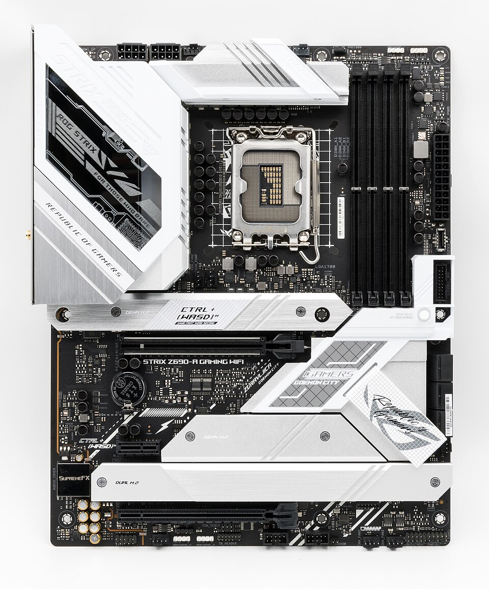

Tarjeta Madre: La Base del Computador
Módulo educativo para la infraestructura del computador de desarrollo

¿Qué es?
La tarjeta madre (también conocida como placa base o motherboard) es el circuito impreso principal de una computadora. Actúa como el eje central sobre el cual se montan y conectan físicamente y eléctricamente todos los demás componentes del sistema, incluyendo la CPU, la memoria RAM, los discos de almacenamiento y las tarjetas de expansión.
Función Principal
Su función primordial es permitir el tráfico de datos y la distribución de energía limpia entre los diversos subsistemas mediante buses de datos de altísima velocidad. Además, alberga la BIOS/UEFI, el firmware fundamental que realiza la autoprueba de encendido (POST) y gestiona la carga del sistema operativo.
Importancia para la Programación
En el contexto del desarrollo de software, elegir una buena tarjeta madre garantiza estabilidad operativa durante largos periodos de compilación de código o ejecución de pruebas de carga. Una placa con buenos controladores de red (Ethernet Gigabit/Wi-Fi 6) e interfaces rápidas USB/Thunderbolt facilita la transferencia fluida de repositorios pesados.
Recomendación para Estudiantes ADSO
Se aconseja seleccionar una tarjeta madre con factor de forma ATX o Micro-ATX que cuente con al menos 4 ranuras DIMM para memoria RAM (permitiendo futuras ampliaciones hasta 32GB o 64GB) y al menos dos zócalos M.2 NVMe para SSDs de alta velocidad.
¿Sabías que...?
Los buses de comunicación PCIe 4.0 y 5.0 integrados en las tarjetas madres modernas pueden transferir datos a velocidades superiores a los 32 a 64 Gigabytes por segundo por carril, eliminando los cuellos de botella al trabajar con grandes volúmenes de datos.